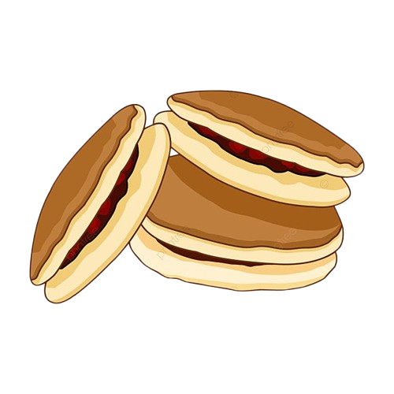

Dorayaki

Resep Membuat Dorayaki
Bahan
- Tepung terigu serbaguna: 150 gram
- Gula pasir: 50 gram
- Madu: 2 sendok makan
- Telur: 2 butir
- Baking powder: 1 sendok teh
- Susu cair atau air: 50 ml
- Pasta kacang merah (anko) atau isian lain (selai cokelat, keju, dll): sesuai selera
- Minyak: secukupnya untuk olesan wajan
Cara Membuat Dorayaki
- Campur telur dan gula
- Kocok telur dengan gula hingga larut dan sedikit mengembang, lalu tambahkan madu.
- Tambahkan bahan kering
- Ayak tepung terigu dan baking powder, kemudian masukkan sedikit-sedikit ke dalam campuran telur sambil diaduk hingga rata.
- Masukkan susu
- ambahkan susu cair atau air sedikit demi sedikit hingga adonan menjadi kental, tapi masih bisa dituang. Diamkan adonan selama 10-15 menit agar mengembang
- Masak dorayaki
- Panaskan wajan anti lengket dengan api kecil, oles tipis minyak, lalu tuang satu sendok sayur adonan (sekitar 7-8 cm). Masak hingga muncul gelembung di permukaan, balik, dan masak sisi lainnya sebentar.
- Isi dorayaki
- Ambil dua pancake, beri isian di tengah salah satunya, kemudian tutup dengan pancake lain. Tekan ringan agar menempel.
Tips
- Gunakan wajan anti lengket: Pastikan wajan bersih dan olesi minyak dengan lap atau kuas untuk mencegah dorayaki lengket.
- Suhu wajan stabil: Gunakan api kecil agar dorayaki matang merata dan tidak gosong. Tes dengan menuang sedikit adonan; jika mulai membentuk lingkaran perlahan, suhu sudah pas.
- Tepatkan ukuran pancake: Tuang adonan dengan sendok sayur kecil agar ukuran dorayaki sama.
- Kreatif dengan isian: Selain kacang merah, coba selai cokelat, krim keju, atau pasta kacang hijau untuk variasi.